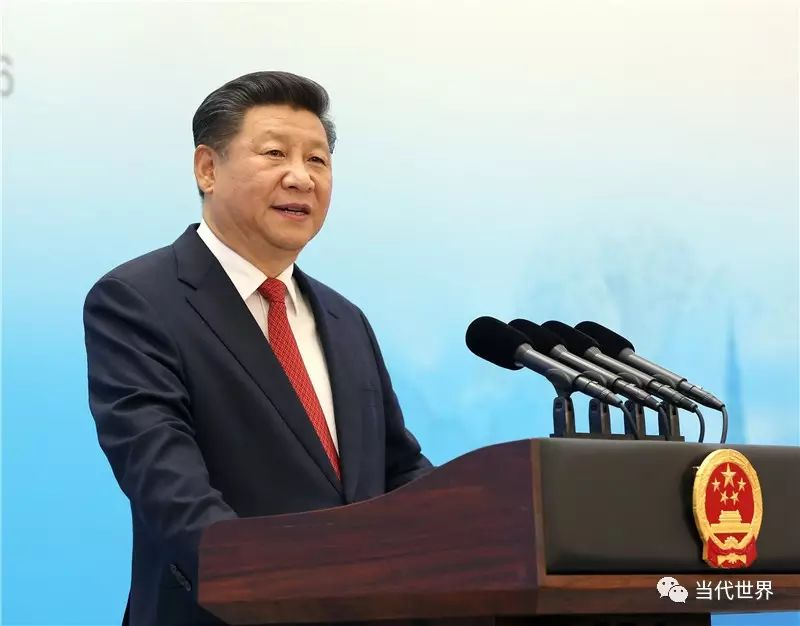
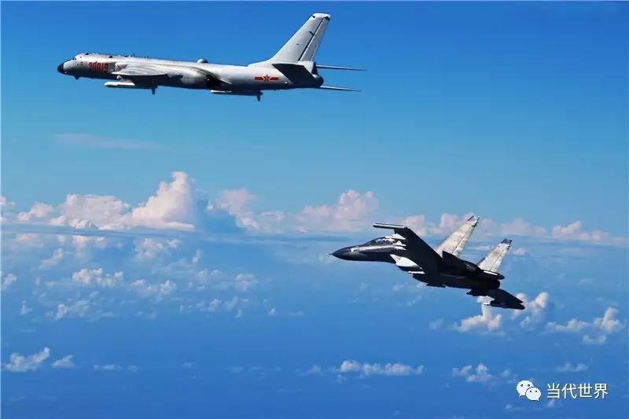
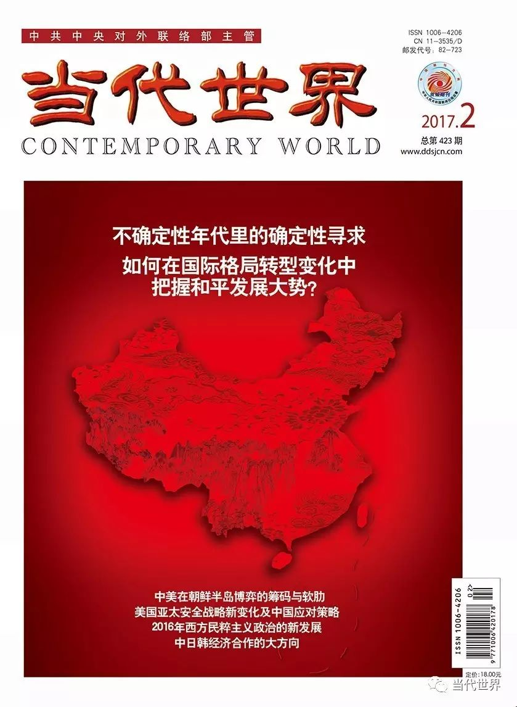

收录于合集
以下文章来源于当代世界 ，作者张清敏
 当代世界 .
当代世界 .
《当代世界》杂志是中共中央对外联络部主管的国政类核心期刊，是深入阐释中央外交方针政策的重要理论阵地；是宣介中国特色大国外交特别是党的对外工作创新成果的权威传播载体；是深入研析世界形势、政党政治、国际格局发展变化和变革规律的专业智力汇聚场。

十八大以来的中国外交创新
D iplomatic Innovation since the 18th Congress
张清敏 北京大学国际关系学院教授
Zhang Qingmin, Professor, School of International Relations, Peking University
翻译 廖东
2012年11月中国共产党第十八次全国代表大会召开以来，中国外交在坚持独立自主原则的基础上，紧紧围绕国家发展这个中心，在实践、理念和制度上进行了创新，展现了中国外交的特色、风格和气派。
Since the 18th CPC National Congress held in November 2012,China’s diplomacy, on the principled basis of independence, China has conducted innovation on practice, conceptualization and institutions of its diplomacy that centers on development of the country and put on display its special features, style and spirit.
实践创新：
新高度、新趋势、新政策
Innovation on Practice:
New Height, New Trend and New Policy
外交实践是外交创新最显著的体现。十八大以来中国外交的实践创新体现在以下几个方面：多边外交达到新高度、首脑外交更活跃、国家利益作为对外政策底线的原则更明确、维护领土主权和地区稳定方面的政策更坚定。
Innovation on practice is the most salient embodiment of diplomatic innovation. Since the 18th Congress, China’s diplomatic innovation is reflected in the following aspects: multilateral diplomacy reaching a new height, head-of-state-and-government diplomacy becoming more active, the principle of national interest being the bottom-line of foreign policy becoming more clear-cut, and the policy in maintaining territorial sovereignty and regional stability becoming even firmer.
第一，多边外交达到新高度。改革开放开启了中国融入国际社会的进程。如今中国已是世界所有主要国际组织的成员。中国通过参与联合国、世界贸易组织、国际货币基金组织、世界银行等国际组织的活动，提出倡议、贡献智慧，承担义务、履行职责，发挥大国作用。
First, multilateral diplomacy has reached a new height. Since the reform and open-up policy opened the process of China’s integration into the international community, China has become a member country of all important international organizations. By taking part in the activities of the United Nations, the World Trade Organization, the International Monetary Fund, the World Bank and the like, the country puts forward initiatives, contributes wisdom, takes responsibilities, performs duties and plays the role of a responsible major country.
中国也是各种全球、地区和跨地区多边机制的倡导者和积极参与者。中国国家元首和政府首脑通过参加金砖国家、二十国集团、亚太经合组织、上海合作组织、中非合作论坛、中国与东盟地区领导人峰会以及东亚峰会等一系列国际机制，积极开展多边外交。
China is also a promoter and active participant in various global, regional and trans-regional multilateral mechanisms. The head of state and head of government of China actively conduct multilateral diplomacy through attending a series of international summit mechanisms such as the BRICS, the G20, the APEC, the Shanghai Cooperation Organization and the ASEAN+1.
第二，首脑外交更趋活跃。中国国家领导人不仅参与多边首脑外交，而且还频频走出国门，进行国事访问，开展友好之旅，增进双边关系。从2013年担任国家主席至2016年6月，习近平主席已出访40多个国家。在同一时期内，越来越多的外国领导人到中国参加国际会议，或进行国事访问。2013年来华访问的外国领导人共有51位，2014年达到了65位，2015年则突破了70位。首脑外交成为十八大以来中国外交最显著的特点和最活跃的形式。
Secondly, head-of-state-and-government diplomacy becomes more active. Not only do the state leaders of China take part in multilateral head-of-state-and- government diplomacy but also frequently go abroad in making state visits, conducting friendship tours and enhancing bilateral ties. Between assuming the presidency in 2013 and June 2016, President Xi Jinping has visited more than 40 countries. During the same period, more and more foreign leaders have come to China either to attend international conferences or to make state visits. In 2013, 51 foreign leaders visited China. In 2014, the figure reached 65. In 2015, it went beyond 70. Head-of-state-and-government diplomacy has become a most salient special feature and a most active form of China’s diplomacy since the 18th Congress.

第三，国家利益成为对外政策的底线得到进一步强调。十八大报告提出，“坚决维护国家主权、安全、发展利益，决不会屈服于任何外来压力”。习近平主席多次强调，任何外国不要指望我们会拿自己的核心利益做交易，不要指望我们会吞下损害我国主权、安全、发展利益的苦果。这一原则显著地体现在维护国家领土主权安全方面。2012年9月，日本政府不顾中国反对，对中国领土钓鱼岛实施了所谓的“国有化”，中日关系因此陷入困境。为维护领土主权，中国海监船开始驶入钓鱼岛领海区域，海监飞机开始进入钓鱼岛上空巡航，中国公布了钓鱼岛领海基点基线，设立东海防空设别区，表达了中国维护领土主权的坚定立场。中国政府坚定维护在南海的领土主权，于2013年7月将西沙群岛、南沙群岛、中沙群岛办事处升格为“中国海南省三沙市”，加强对南海地区施行有效管理，并在主权范围内对一些岛礁进行了主要属于民事范畴的陆域吹填工程。2013年，菲律宾单方面将南海问题提交给国际海洋仲裁法庭，引起国际社会的关注。中国坚持对南沙和西沙群岛及其附近水域拥有主权，对于仲裁采取不接受、不参与、不承认和不执行的“四不”立场。
Third, national interest becoming the bottom-line of foreign policy has been emphasized on even further. The Report to the 18th Congress vowed to “firmly uphold China’s sovereignty, security and development interest in and never yield to any outside pressure”. President Xi Jinping has stressed times and again that no countries should expect China to trade away its core national interest and to swallow the bitter fruit of undermining its sovereignty, security and development interests. This principle is underlined in safeguarding national territorial sovereignty and security. In September 2012, in spite of China’s opposition, the Japanese Government implemented the so- called“nationalization”of Chinese territory the Diaoyu Islands, China-Japan relations thus plumbing into predicaments. To uphold its territorial sovereignty, China’s maritime surveillance ships began to move into the territorial waters of the Diaoyu Islands and its maritime surveillance aircraft began to patrol the air space of the islands. China announced the baselines of its territorial waters of the Diaoyu Islands and the air defense identification zone of the East China Sea, expressing its firm stand on safeguarding its territorial sovereignty. Likewise, the Chinese Government has been firm in safeguarding its territorial sovereignty in the South China Sea. In July 2013, it elevated the Administration Office of the Xisha, Nansha and Zhongsha Islands to the Sansha Municipality of China’s Hainan Province, strengthening effective administration over the South China Sea area and, within the scope of its sovereignty, carried out land reclamation projects in some of the isles and rocks mainly for civilian purpose. In 2013, the Philippines unilaterally submitted the issue of South China Sea to the Permanent Court of Arbitration(PCA), attracting attention of the international community. China insists on its sovereignty over the Nansha Islands, the Xisha Islands and the adjacent waters and has adopted a “four No’s” position on international arbitration, namely neither to accept, participate or recognize the arbitration nor to implement its results.
第四，维护东北亚地区的和平稳定，政策更加明确。作为朝鲜半岛的近邻，中国一直坚持半岛无核化目标，维护半岛和平稳定，主张通过对话协商解决问题。2016年1月朝鲜第四次核试验后，中国支持联合国安理会通过将朝鲜的主要出口商品以及运输方式、资金运作渠道全面纳入制裁范围的第2270号决议。为执行有关决议，中国根据《对外贸易法》，禁止从朝鲜进口矿物原料，禁止对朝鲜出口航空燃油。
Fourth, China’s policy has become more clear-cut in maintaining peace and stability of the Northeast Asian region. As a next-door neighbor of the Korean Peninsula, China has insisted on the goal of denuclearization and maintenance of peace and stability of the peninsula, standing for resolving the issue through dialogue and consultation. After the fourth nuclear test of the DPRK, China supported the UN Security Council in passing its resolution 2270 for a comprehensive sanction of the DPRK that included its main export commodities, principal mode of transport and channels of financial operation. To implement pertinent UN resolutions, China has prohibited imports of mineral materials from the DPRK and exports of aviation fuels according to its Foreign Trade Law.
当然，中国始终认为制裁不是最终的解决方案，一直呼吁各方回到对话中来，反对恶化朝鲜半岛局势的任何行动，反对美国与韩国在朝鲜半岛部署“萨德”反导系统。对于朝鲜在2016年9月举行的第五次核试验，中国表示“坚决反对”，但也反对采取无助于解决问题的单边制裁。
Of course, China has all along held that sanctions are not the ultimate solution, consistently calling for all parties to return to dialogue and being opposed to any actions that may worsen the situation of the Korean Peninsula and to the US and the ROK deploying the THAAD anti-missile system in the Korean Peninsula. In regard to the fifth nuclear test of the DPRK in September 2016, China expressed “firm opposition” but at the same time stood against unilateral sanctions that are not helpful for resolving the issue.

理念创新：
新理念、新思想、新主张
Innovation on Conceptualization: New Concepts,
New Thinking and New Propositions
新的外交实践需要新的理论指导，新理论需要在新的实践中加以运用和检验。十八大以来的外交实践是在一系列新的理念指导下得以实现的。这些新理念主要包括以下方面。
New practice of diplomacy needs new theoretic guidance and conversely new theory needs to be applied and tested by new practice. China’s diplomatic practice since the 18th Congress has taken place under the guidance of series new concepts, which mainly include the following.
第一，“中国梦”的理念。十八大召开后，习近平总书记以实现中华民族伟大复兴的“中国梦”来定位中国经济建设的基本任务。在此后的一系列重要外交场合，习近平系统阐述了中国梦的内涵及其世界意义。他指出，中国梦同世界各国人民的美好梦想息息相通。实现中国梦，离不开和平的国际环境和稳定的国际秩序。中国人民圆梦必将给各国创造更多机遇，必将更好促进世界和平与发展。
First, the concept of the “Chinese Dream”. After the convocation of the 18th Congress, General Secretary Xi Jinping positioned China’s basic tasks of economic development as the “Chinese Dream” for the great national renewal of the Chinese nation. Since then, he has, on several occasions, systematically expounded on the connotation of the Chinese Dream and its world significance. He points out that the Chinese Dream is connected to beautiful dreams of the people of all countries in the world. The realization of the Chinese Dream cannot be separated from a peaceful international environment and a stable international order. The realization of the dream of the Chinese people will necessarily bring about still more opportunities for various countries and even better promote world peace and development.
第二，“一带一路”倡议。在2013年访问中亚和东南亚国家时，习近平主席提出建设丝绸之路经济带和21世纪海上丝绸之路的倡议。这是在顺应时代要求的基础上对古丝绸之路的传承和提升。2014年中国政府公布了《推动共建丝绸之路经济带和21世纪海上丝绸之路的愿景与行动》。“一带一路”从倡议发展为具体的行动，为连接亚太经济圈和欧洲经济圈，提供了一个相关国家共商、共建、共享的包容性发展平台。
Second, the Belt and Road initiative. During his visits to Central and Southeast Asian countries in 2013, President Xi Jinping made the initiative to build a Silk Road Economic Belt and a 21st Century Maritime Silk Road, which carries forward and enhances the ancient Silk Road on the basis of meeting the needs of the times. In 2014, the Chinese Government issued a whitepaper titled Vision and Actions on Jointly Building Silk Road Economic Belt and 21st Century Maritime Silk Road. The Belt and Road has turned from an initiative to concrete actions. In linking the Asia-Pacific economic sphere with the European one, it provides concerned countries with a platform for an inclusive development featuring joint consultation, joint construction and sharing.
三年多来，已经有一百多个国家和国际组织参与其中，中国同30多个沿线国家签署了共建“一带一路”合作协议、同20多个国家开展国际产能合作，联合国等国际组织也态度积极，以亚投行、丝路基金为代表的金融合作不断深入，一批有影响力的标志性项目逐步落地。
Over the past three years, more than 100 countries and international organizations have joined up, China having signed cooperation agreements with over thirty en route countries on jointly building the Belt and Road and conducted international production capacity cooperation with more than thirty of them. International organizations like the United Nations have taken a positive attitude. Financial cooperation represented by the Asian Infrastructure Investment Bank and the Silk Road Fund has kept deepening. A number of influential and land-mark projects have be under construction one after another.
第三，正确义利观。在外交工作中坚持国家利益的底线，并不意味着唯利是图。2013年，习近平主席访非期间提出，中国外交要树立正确的义利观。随后习近平又在多个国际场合对正确的义利观做出了精辟论述。他指出：义，反映的是一个理念，共产党人、社会主义国家的理念。利，就是要恪守互利共赢原则。要做到义利兼顾，讲信义、重情义、扬正义、树道义。主张政治上秉持公道正义、坚持平等相待；经济上坚持互利共赢、共同发展，这进一步丰富了中国外交的核心价值观。
Third, the sound value of righteousness and benefit. Insisting on the bottom- line of national interest in diplomatic work does not mean to seek nothing but profit. During his visit to Africa in 2013, President Xi Jinping pointed out that it is necessary of Chinese diplomacy to establish a sound value of righteousness and benefit. Since then, Xi Jinping has on several international occasions incisively expounded on the sound value of righteousness and benefit. He points out that righteousness should reflect one of our ideas, that of the Communists and that of a socialist country. Benefit should go by the principle of mutual benefit in win-win situation. It is necessary to take into account both righteousness and benefit, underscoring good faith, friendship, justice and ethics. He calls for upholding equity and justice and insisting on treating others on equal footing on political terms and for persisting in mutual benefit in win-win situation and common development in economic terms. All this has enriched the core values of Chinese diplomacy.
第四，建立新型国际关系的理念。针对国际政治中的“修昔底德陷阱”问题，习近平主席在2013年6月与美国总统奥巴马会晤时提出，按照“不冲突不对抗、相互尊重、合作共赢”的原则，建立中美新型大国关系的理念，这一主张成为中国发展和稳定中美关系的目标和指导思想。
Fourth, the concept of establishing a new type of international relations. Referring to the issue of “Thucydides trap” in international relations, President Xi Jinping proposed during his meeting with US President Barack Obama in June 2013 to build a new-type major country relationship between China and the US that follows the principles of“non-conflict, non- confrontation, mutual respect and win-win cooperation”. This proposition has become China’s objective and guideline in developing and stabilizing China-US relations.
2014年11月，在中央外事工作会议在上，习近平强调，要推动建立以合作共赢为核心的新型国际关系，坚持互利共赢的开放战略，把合作共赢理念体现到政治、经济、安全、文化等对外合作的方方面面，推动建立以合作共赢为核心的新型国际关系。这是对国际秩序观的创新和发展，开辟了国际关系新愿景。
In November 2014, at a central conference on work relating foreign affairs, Xi Jinping emphasized that it is necessary to establish a new-type international relations with win-win cooperation at its core, to keep up an open strategy featuring win-win cooperation, to embody the concept of win-win cooperation in political, economic, security, cultural and all aspects of external cooperation, and to promote the establishment of a new-type international relations centering about win-win cooperation. As innovation and development on the outlook of the international order, this has opened a new vision for international relations.
第五，命运共同体的理念。继提出构建以合作共赢为核心的新型国际关系的目标之后，习近平主席在博鳌亚洲论坛2015年年会上提出推动建设人类命运共同体的理念。在第七十届联合国大会一般性辩论中，习近平主席提出打造人类命运共同体“五位一体”的总路径和总布局：倡导建立平等相待、互商互谅的伙伴关系；营造公道正义、共建共享的安全格局；谋求开放创新、包容互惠的发展前景；促进和而不同、兼收并蓄的文明交流；构筑尊崇自然、绿色发展的生态体系。
Fifth, the concept of community of shared future for mankind. After putting forward the objective of the establishment of a new-type international relations centering on win-win cooperation, President Xi Jinping proposed to promote the construction of a community of shared future for mankind at the Boao Forum for Asia annual conference 2015. At the general debate of the 70th Session of the UN General Assembly, President Xi Jinping put forward a “pentad” general route and overall layout for constructing the community of shard future for mankind: t o build partnerships in which countries treat each other as equals, engage in mutual consultation and show mutual understanding; to create a security architecture featuring fairness, justice, joint contribution and shared benefits; to promote open, innovative and inclusive development that benefits all; to increase inter-civilization exchanges to promote harmony, inclusiveness and respect for differences; and to build an ecosystem that puts mother nature and green development first.
第六，新亚洲安全观。2014年5月，习近平在“亚信”第四次峰会上提出，要倡导共同、综合、合作、可持续的亚洲安全观。共同，就是要尊重和保障每一个国家的安全；综合，就是要统筹维护传统领域和非传统领域安全；合作，就是要通过对话合作，促进各国和本地区安全；可持续，就是要发展和安全并重以实现持久安全。这一理念不仅为我国维护国家安全、加强对外安全合作提供了指导思想，而且通过搭建地区安全和合作新架构，走出一条共建、共享、共赢的亚洲安全之路，为维护亚洲乃至世界的安全稳定提供了新思路，是中国对地区和世界安全作出的重要贡献。
Sixth, the new Asian security outlook. At the 4th CICA Summit in May 2014, Xi Jinping proposed to promote an Asian security outlook for common, comprehensive, cooperative and sustainable security. Common security is to respect and ensure security of every country. Comprehensive security is to coordinate the overall maintenance of security in traditional area and non- traditional area. Cooperative security is to promote security for all countries and the region through dialogue and cooperation. Sustainable security is to give dual priority to development and security so as to achieve lasting peace. This concept not only provides China with a guideline in safeguarding national security and strengthening external security cooperation but also opens an road to Asian security featuring joint construction, sharing and win-win situation by building a new architecture for regional security and cooperation. It thus provides a new thinking for maintaining security and stability for Asia and the world at large, being an important contribution of China to regional and world security.
第七，“亲、诚、惠、容”周边外交理念和“真、实、亲、诚”对非工作思想。周边为中国安身立命之所、发展繁荣之基。2013年10月，中央召开周边外交工作座谈会，习近平在会上强调了中国在与周边国家的关系中，要坚持与邻为善、以邻为伴，坚持睦邻、安邻、富邻，突出体现“亲、诚、惠、容”的理念。
Seventh, the concept for neighborhood diplomacy featuring“amity, sincerity, mutual benefit and inclusiveness” and the thinking on China’s relations with Africa featuring“sincerity, delivering outcomes, affinity and good faith”. The neighborhood is where China settles down and gets on with its pursuit, and the base for China to build on development and prosperity. In October 2013, the CPC Central Committee held a forum on work relating neighborhood diplomacy, at which Xi Jinping emphasized that in China’s relations with the neighboring countries, it is necessary to persist in building good-neighborliness and partnership with neighbors and in bringing harmony, security and prosperity to neighbors, underlining the concept of“amity, sincerity, mutual benefit and inclusiveness”.
2013年习近平主席首次访非期间提出了“真、实、亲、诚”对非工作的四字箴言。即“对待非洲朋友，我们讲一个‘真’字”；“开展对非合作，我们讲一个‘实’字”；“加强中非友好，我们讲一个‘亲’字”；“解决合作中的问题，我们讲一个‘诚’字”。这一理念成为中国对非工作的新理念。上述这些理念成为新时期中国发展与周边和发展中国家的指导思想。
During his first visit to Africa in 2013, President Xi Jinping put forward the four-character motto for China’s relations with Africa, namely “sincerity, delivering outcomes, affinity and good faith”as follows, that to be with African friends, we stress on sincerity; to conduct cooperation with Africa, we stress on delivering outcomes; to strengthen China-Africa friendship, we stress on affinity; and to resolve problems arising from cooperation, we stress on good faith. This has become a new concept of China’s relations with Africa. The aforesaid concepts have become the guideline for China in developing relations with neighboring countries and developing countries in the new era.
责任编辑：张凯
平台编辑：魏丹丹 吴小玲
本文版权归《当代世界》杂志所有，转载需联系本公众平台授权
《当代世界》2017年第2期
中共中央对外联络部主管·研究国际问题的必读期刊

**** 【中文刊】 18元/期，216元/年
邮发代号：82-723，国内统一刊号：CN 11-3535/D
国际标准刊号：ISSN 1006-4206
【英文刊】 80元/期，320元/年
邮发代号：80-270，国内统一刊号：CN 10-1398/D
国际标准刊号：ISSN 2096-1596
地址：北京市复兴路4号中联部（100860）
订购电话：010-83908408
投稿电话：010-83908407/9012
新春特惠 微信订阅《当代世界》精美杂志

**** 长按二维码，关注当代世界！
与您分享最权威的国际时政文章！ ****